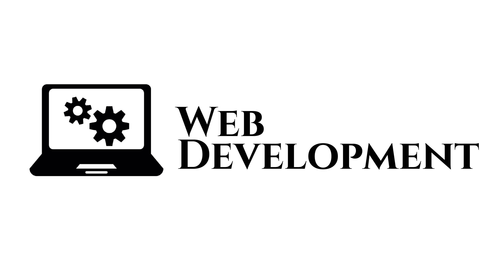

HOME
ABOUT US
SERVICES
TRAINING
PLACEMENT DRIVE
A Digital Marketing Company in Chandigarh with a Difference and Proven Expertise.

At Kreativan Technologies, we help small & midsize business enterprises across the
globe, get the desired ROI through our bespoke web and allied services. The whole idea is to
reach out to a wider audience locally or globally, and convert prospects to new customers. The
bottomline is to increase conversion rate, visitor footfalls, traffic, sales, revenue, leads and
new subscribers for any organization, across the board.
As the best digital marketing agency, we’ve mastered the art of website design,
development and
optimization; thanks to our highly professional team of qualified web designers & developers,
web analysts, SEO strategists, IT experts and digital marketers that leave no stone unturned in
bolstering a site’s overall performance



FAQ's
What skills should a web developer have?
Can I be a digital marketer and web developer?
Is Digital Marketing a stable carrier?
How long do digital marketers have to work?
Among the Top Digital Marketing Companies in North India

It all starts with a project feasibility study, and thereafter a team is allocated with
an experienced
project manager, looking into the critical aspects of software development, testing and final delivery.
A custom software that looks into the needs of a client or business, and streamlines the work processes,
is what matters the most. Whether it is a highly responsive mobile App development with the
best-in-class UI/UX features or a standard company software, it must encompass all the aspects of
product & service life-cycle, shopping cart features, and other vital information, as specified by the
client. Being the best digital marketing company in Chandigarh, we deliver custom software & mobile
application development solutions in an affordable way.